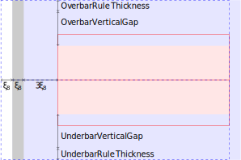
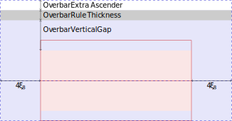
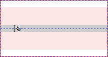
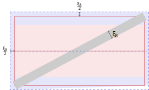
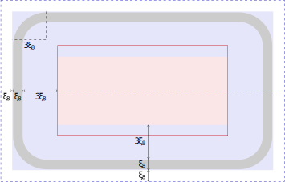
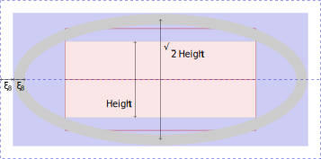

This specification defines a core subset of Mathematical Markup
Language, or MathML, that is suitable for browser implementation.
MathML is a markup language for describing mathematical notation
and capturing both its structure and content. The goal of MathML is to
enable mathematics to be served, received, and processed on the World
Wide Web, just as HTML has enabled this functionality for text.
This is a public copy of the editors’ draft. It is provided for
discussion only and may change at any moment. Its publication here does
not imply endorsement of its contents by W3C. Don’t cite this document
other than as work in progress.
Introduction
The [[MATHML3]] specification has several shortcomings that make it
hard to implement consistently across web rendering engines or to
extend with user-defined constructions e.g.
It is a huge and standalone specification.
It does not contain any detailed rendering rules.
It is not driven by browser-implementation.
It lacks automated testing.
This MathML Core specification intends to address these issues by
being as accurate as possible on the visual rendering of mathematical
formulas using additional rules from the TeXBook’s Appendix G
[[?TEXBOOK]] and from the Open Font Format [[OPEN-FONT-FORMAT]],
[[OPEN-TYPE-MATH-ILLUMINATED]]. It also relies on modern browser
implementations and web technologies [[HTML]] clarifying interactions
with them when needed or introducing new low-level primitives to
improve the web platform layering. Parts of MathML 3 that do not
fit well in this framework or are rarely used in practice have been
omitted. Instead, they are described in a separate and larger
[[MATHML4]] specification.
By increasing the level of implementation details, focusing on a
workable subset, following a browser-driven design and relying on
automated web platform tests, this specification is expected to
greatly improve MathML interoperability. Moreover, effort on MathML
layering will enable users to implement the rest of the MathML 4
specification, or more generally to extend MathML Core, using
polyfills or converters.
User agents must support various CSS features mentioned in this
specification, including new ones described in
.
All documents containing MathML Core elements must include
CSS rules described in
as part of user-agent level style sheet defaults.
Rules relying on universal selectors such as
mfrac > * or msub > :not(:first-child) may
be replaced with equivalent expanded rules listing all possible
MathML Core elements.
DOM and Javascript
User agents supporting
Web application APIs
must ensure that they keep the visual rendering of MathML
in synchronization with the [[DOM]] tree.
Properly define DOM/IDL relationships.
Ensure that new IDL attributes reflects .
All the nodes representing MathML Core elements in the DOM
must implement, and expose to scripts, the following
MathMLElement interface.
The
GlobalEventHandlers,
DocumentAndElementEventHandlers and
HTMLOrSVGElement interfaces are defined in
[[HTML]].
The
ElementCSSInlineStyle
interface is defined in [[CSSOM]].
Text layout
Because math fonts generally contain very tall glyphs such as big
integrals, using typographic metrics is important to avoid
excessive line spacing of text. As a consequence,
user agents must take into account the USE_TYPO_METRICS flag from
the OS/2 table [[OPEN-FONT-FORMAT]] when performing text layout.
Types for MathML Attribute Values
unsigned-integer
An
<integer-value> value as defined in
[[CSS-VALUES-3]], whose first character is neither
U+002D HYPHEN-MINUS character (-) nor
U+002B PLUS SIGN (+).
unsigned-number
A
<number-value> value as defined in
[[CSS-VALUES-3]], whose first character is neither
U+002D HYPHEN-MINUS character (-) nor
U+002B PLUS SIGN (+).
The
id,
class,
style,
attributes have the same syntax and semantic as defined for
id,
class and
style attributes on
HTML elements.
The
href
attribute has the syntax and semantic as defined for
the href attribute on
<a> element.
To fully implement this attribute, the following CSS properties for
links must be specified in the
user agent stylesheet:
The
dir
attribute, if present,
must be a case-insensitive match
to ltr or ltr.
It is mapped to the
direction
CSS property.
This attribute is used to set the directionality of math formulas, which is
often rtl in Arabic speaking world.
Legacy MathML Style Attributes
The
mathcolor
and
mathbackground
attributes, if present, must
have a value that is a color.
The mathcolor property describes the foreground fill color of
an MathML text, bars etc and the background color of an element.
They are mapped to the
color and
background-color CSS properties.
The
mathsize
attribute, if present, must
have a value that is a valid length-percentage.
The mathsize property indicates indicates the desired height
of glyphs in math formulas but also scale other parts (spacing, shifts,
line thickness of bars etc) accordingly.
It is mapped to the CSS property
font-size
and the mathsize values are interpreted according to the
definition in [[CSS-FONTS-3]].
The above attributes are implemented for compatibility with full MathML. Authors whose only target is MathML Core are encouraged to use CSS for styling.
The mathvariant attribute
The
mathvariant
attribute,
if present, must be a case-insensitive match to one of:
normal,
bold,
italic,
bold-italic,
double-struck,
bold-fraktur,
script,
bold-script,
fraktur,
sans-serif,
bold-sans-serif,
sans-serif-italic,
sans-serif-bold-italic,
monospace,
initial,
tailed,
looped, or
stretched.
The mathvariant attribute defines logical classes of token
elements. Each class provides a collection of typographically-related
symbolic tokens with specific meaning within a given mathematical
expression.
For mathvariant values other than normal,
this is done by using glyphs of
Unicode's Mathematical Alphanumeric Symbols.
Hence, the mathvariant attribute
is mapped to new values of the CSS property
text-transform.
More precisely, normal is mapped to none
while all the other values the corresponding CSS value with the extra
math- prefix.
mathvariant values other than normal
are implemented for compatibility with full MathML and legacy editors that can't access characters in Plane 1 of Unicode. Authors are encouraged to use the corresponding Unicode characters.
The normal value is still important to cancel automatic
italic of the <mi> element.
Consider a new script style to distinguish Chancery and Spencerian?
Unicode does not distinguish between Chancery and Spencerian style
for the Unicode MATHEMATICAL SCRIPT characters. However, some
mathematical fonts rely on salt or
ssXY properties from [[OPEN-FONT-FORMAT]]
to provide both styles. Page authors may use the
font-variant-alternates property with corresponding OpenType font features
to access these glyphs.
The displaystyle and scriptlevel attributes
The
displaystyle
attribute, if present, must have a value that is a boolean.
It is mapped to the CSS property math-style.
More precisely, true is mapped to display and
false to inline.
This attribute indicate whether formulas should try to minimize
the logical height (value is false) or not
(value is true) e.g. by changing the size of content or
the layout of scripts.
The
scriptlevel
attribute, if present, must have value
+<U>, -<U> or <U>
where <U> is an
unsigned-integer.
It is mapped to the math-script-level.
More precisely,
+<U>, -<U> and
<U>
are respectively mapped to
add(<U>)add(<-U>)
and <U>.
displaystyle and scriptlevel values
are automatically adjusted within MathML elements.
To fully implement these attributes, additional CSS properties must be
specified in the user agent stylesheet
as described in .
TEX's \displaystyle, \textstyle,
\scriptstyle, and \scriptscriptstyle correspond
to displaystyle and scriptlevel as
true and 0,
false and 0,
false and 1,
and false and 2, respectively.
Do we actually need these rules?
What about scriptlevel?
The Top-Level <math> Element
MathML specifies a single top-level or root
<math> element, which encapsulates each
instance of MathML markup within a document. All other MathML content
must be contained in a <math> element.
The <math>
element accepts the attributes described
in as well as the
following attribute:
The
display
attribute, if present,
must have value block or inline.
To fully implement this attribute, additional CSS properties must be
specified in the user agent stylesheet
as described in .
Improve layout description. Since
the math element is already inline or
block display, it should probably generate an anonymous
mrow-like box container?
The layout algorithm of the <math> element
is the same as the <mrow> element. User agents must
ensure correct baseline alignment, centering, sizing etc of the
<math> element.
TEX's display mode $...$
and inline mode $...$ correspond to
display="block" and display="inline"
respectively.
Presentation Markup
Introduction
Box Model
Specify special display values for
other elements?
The <math> root may have
inline or block display, as suggested in
.
Tabular MathML elements have table,
table-row
and table-cell display as discussed in
.
All the other elements have block display.
In order to specify math layout in different
writing modes,
this specification uses concepts from [[CSS-WRITING-MODES-3]]:
Unless specified otherwise,
the figures in this specification use a
writing mode
of horizontal-lr and ltr.
See ,
and
for examples of other
writing modes that are sometimes used for math layout.
MathML boxes have several parameters in order to layout in
a way that is compatible with CSS but also to take into account
very accurate positions and spacing within math formulas.
Each math box has the following parameters:
The alphabetic baseline also just called
the baseline. The distance between the
alphabetic baseline and the line-over
(respectively line-under) edge of the box is called
line-ascent (respectively line-descent).
The mathematical baseline also called
math axis. It is shifted away from the alphabetical
baseline by AxisHeight towards the line-over.
The ink-over baseline, indicating the line-over
theorical limit of math content (text, bars...) excluding any
extra space.
It is shifted away from the alphabetic baseline
by ink line-ascent towards the line-over.
If not specified, it is equal to the line-over axis.
The ink-under baseline, indicating the line-under
theorical limit of math content (text, bars...) without extra
space. It is shifted away from the alphabetic baseline
by ink line-descent towards the line-under.
If not specified, it is equal to the line-under axis.
Define MathML line breaking?
Unless specified otherwise, the last baseline set is equal to the
first baseline set for MathML boxes.
An optional italic correction
which provides a measure of how much the text of a box is
slanted along the inline axis.
See .
Examples of italic correction for italic f and large integral
If it is requested during calculation of min-content or
max-content inline sizes or during layout
then 0 is used as a fallback value.
An optional top accent attachment
which provides a reference offset on the
inline axis of a box that should be used when
positioning that box as an accent.
See .
Example of top accent attachment for a circumflex accent
If it is requested during calculation of min-content
(respectively max-content) inline size then half the
min-content (respectively max-content) inline size is used as a
fallback value.
If it is requested during layout then half the
inline size of the box is used as a fallback value.
Given a MathML box, the inline offset of a child box
is the distance between the
inline-start edge of
the parent box and the
inline-start edge
of the child.
The block offset of a child box is the offset between
block-start edge of
the parent box and the
block-start edge
of the child.
The line-left offset,
line-right offset,
line-over offset and
line-under offset are defined similarly
as offsets between the corresponding parent and child edges.
Box model for writing mode horizontal-tb and rtl that may be used in e.g. Arabic math.Box model for writing mode vertical-lr and ltr that may be used in e.g. Mongolian math.Box model for writing mode vertical-rl and ltr that may be used in e.g. Japanese math.
The position of children and graphical items inside a MathML
box are expressed using the inline offset
and block offset.
For convenience, the layout algorithms may describe offsets using
flow-relative directions, line-relative directions or
the baseline.
It is always possible to pass from one description to the other
because position of children are always performed after the
metrics of the box and of its children are calculated.
Here are examples of offsets obtained from line-relative
metrics:
The box metrics and offsets of the
padding box
is obtained from the
content box
by taking into account the corresponding
padding
properties as described in CSS.
The baselines
of the padding box are the same as the one of the content box.
If the content box has a top accent attachment
or italic correction then the padding box has the same
properties, increased by the inline-start padding.
The box metrics and offsets of the
border box
is obtained from the
padding box
by taking into account the corresponding
border-width
property as described in CSS.
In general, the baselines of the border box are the same as
the one of the padding box. However, if the line-over border is
positive then the ink-over baseline is set to the
line-over edge of the border box and if
the line-under border is
positive then the ink-under baseline is set to the
line-under edge of the border box.
If the padding box has a top accent attachment
then the border box has the same top accent attachment value
increased by the border-width of its inline-start edge.
If the padding box has an italic correction
and the border-width of the inline-end edge of the border box
is zero then the border box has the same italic correction value
increased by the border-width of its inline-start edge.
The box metrics and offsets of the
margin box
is obtained from the
border box
by taking into account the corresponding
margin
properties as described in CSS.
The baselines
of the margin box are the same as the one of the border box.
During box layout, optional
inline stretch size constraint and
block stretch size constraint parameters may be used on
embellished operators. The former indicates
a target size that a core operator stretched along
the inline axis should cover.
The latter indicates an ink line-ascent and ink line-descent
that a core operator stretched along the block axis
should cover.
Unless specified otherwise, these parameters are ignored during
the layout of the box and children are laid out without
any stretch size constraint.
Token Elements
Token elements in presentation markup are broadly intended to
represent the smallest units of mathematical notation which carry
meaning. Tokens are roughly analogous to words in text. However,
because of the precise, symbolic nature of mathematical notation, the
various categories and properties of token elements figure
prominently in MathML markup. By contrast, in textual data,
individual words rarely need to be marked up or styled specially.
In practice, most MathML token elements just contain simple text
for variables, numbers, operators etc and don't need sophisticated
layout. However, it can contain contain text with line breaks or
arbitrary HTML5 phrasing elements.
Text <mtext>
The
<mtext>
element is used to represent arbitrary text
that should be rendered as itself. In general, the
<mtext> element is intended to denote
commentary text.
The <mtext> element accepts the attributes described
in .
Layout of <mtext>
Handle orthogonal flow when CSS writing-mode changes?
The mtext element is as a
block box
and the min-content/max-content inline sizes,
inline size, block size, first/last baseline sets are determined
accordingly.
If the text content is made of a single glyph and this glyph
has an entry an entry in the
MathItalicsCorrectionInfo table then the specified
value is used as the italic correction.
If the text content is made of a single glyph and this glyph
has an entry in the MathTopAccentAttachment table
then the specified value is used as the top accent attachment of
the <mtext> element.
OpenType features are enabled as described in
.
OpenType features
Good mathematical rendering requires use of non-Unicode glyphs.
Mathematical fonts may only provide these glyphs when the
math script tag is enabled [[OPEN-FONT-FORMAT]],
so user agents must
ensure that it is the case when rendering text inside the
<mtext> element.
If on the <mtext> element
the CSS property
direction
is rtl,
then user agents must enable the rtlm
OpenType feature on text nodes [[OPEN-FONT-FORMAT]]
unless it contradicts what the
page author has specified with the
font-feature-settings CSS property.
Add detailed rules for the ssty OpenType feature
Some characters like primes already have script size by default
and
hence would be too small when used in a script position.
To render such “prescripted” characters with the appropriate size,
If a <mtext> has a positive
math-script-level value then user agents must
enable
the ssty (Script Style) OpenType feature
on its text nodes [[OPEN-FONT-FORMAT]]
unless it contradicts what the page author has
specified with the
font-feature-settings
CSS property.
Identifier <mi>
The
<mi>
element represents a symbolic name or
arbitrary text
that should be rendered as an identifier. Identifiers can include
variables, function names, and symbolic constants.
The <mi> element accepts the attributes described
in . Its layout algorithm is
the same as the <mtext> element.
The
user agent stylesheet
must contain the following property in order to implement automatic
italic:
Number <mn>
The
<mn>
element represents a "numeric literal" or
other data that should be rendered as a numeric literal. Generally
speaking, a numeric literal is a sequence of digits, perhaps including a
decimal point, representing an unsigned integer or real number.
The <mn> element accepts the attributes described
in . Its layout algorithm is
the same as the
<mtext> element.
Operator, Fence, Separator or Accent <mo>
The
<mo>
element represents an
operator or anything that should be rendered as an operator.
In general, the notational conventions for mathematical operators
are quite complicated, and therefore MathML provides a relatively
sophisticated mechanism for specifying the rendering behavior of an
<mo> element.
As a consequence, in MathML the
list of things that should "render as an operator" includes a
number of notations that are not mathematical operators in the
ordinary sense. Besides ordinary operators with infix, prefix, or
postfix forms, these include fence characters such as braces,
parentheses, and "absolute value" bars; separators such as comma
and semicolon; and mathematical accents such as a bar or tilde over
a symbol. This chapter uses the term "operator" to refer to
operators in this broad sense.
The <mo> element accepts the attributes described
in as well as the following
attributes:
The stretch axis of an embellished operator
is inline if its
core operator contains only text content
made of a unique character c and that
character has stretch axis inline per
.
Otherwise, stretch axis of the embellished operator
is block.
Dictionary-based attributes
The form
property of an embellished operator
element must be a case-insensitive match to infix, prefix or
postfix.
The form attribute can only be defined on its core operator (an
<mo> element).
Otherwise, the embellished operator has form
infix.
The
fence,
separator,
stretchy,
symmetric,
largeop,
movablelimits,
accent
properties of an embellished operator are is either
true or false. In the former case, it
is said that the embellished operatorhas the
property.
The corresponding attributes can only be defined on their core operator (an
<mo> element) and must be boolean.
The
fence,
separator,
stretchy,
symmetric,
largeop,
movablelimits,
accent,
lspace,
rspace,
maxsize,
minsize properties of
an embellished operator are determined as follows:
If the corresponding attribute is present and valid
on the core operator, then this property is used;
If no entry is found and the form
of embellished operator was not explicitly specified
as an attribute on its core operator, then
user agents must try other dictionary entries for different
values of F in the following order:
infix, prefix, postfix;
Otherwise, use the value false for
fence,
separator,
stretchy,
symmetric,
largeop,
movablelimits and
accent properties ;
0.2777777777777778em for
lspace and
rspace properties ;
100% for the minsize property and
infinity for the maxsize property.
Percentage values for lspace,
rspace
properties of an embellished operator
are interpreted relative to the value read from the dictionary
or to the fallback value above.
Percentages value for minsize
and
maxsize
properties of an embellished operator
are interpreted relative to
the target stretch size before application of
size constraints, as described in
.
Layout of operators
The text of the operator must only be painted if the
visibility of
the <mo> element is visible.
In that case, it must be painted with the
color
of the <mo> element.
Operators are laid out as follows:
If the content of the <mo> element is not
made
of a single character c then fallback to the
layout algorithm of .
If the stretch axis of the operator is inline
then
Try and get a
MathVariants.horizGlyphConstructionOffsets
table from the glyph corresponding to
c in the current font, or otherwise
from the entry
with base character c.
If that's not possible then
fallback to the
layout algorithm of .
The min-content/max-content inline sizes of the content
are set to the one obtained by the layout algorithm of
.
The painting of the operator is performed by the
algorithm
to shape a stretchy glyph
stretched to inline dimensionT and
at position determined by the previous box metrics.
Otherwise, the stretch axis of the operator is
block. The following steps are performed:
Try and get a
MathVariants.vertGlyphConstructionOffsets
table from the glyph corresponding to
c in the current font, or otherwise
from the entry of
with base character c.
If that's not possible then
fallback to the
layout algorithm of .
The inline size and ink block metrics of the content
are obtained from the
box metrics of a stretchy glyph
stretched to block dimensionTascent +
Tdescent.
The inline size is the stretchy glyph width returned.
If Δ = Tascent +
Tdescent −
(stretchy glyph ascent + stretchy glyph descent)
then the ink ascent of the content is
Tascent + Δ/2
and the ink descent of the content is
Tdescent + Δ/2.
The ascent and descent of the content
are the same as the ink
ascent and ink descent of the content.
The painting of the operator is performed by the
algorithm
to shape a stretchy glyph
stretched to block dimensionT and
at position determined by the previous box metrics
shifted by Δ/2 towards the line-over.
Base size, size variants and glyph assembly
for
the left brace
If math-style on
the <mo> element is display,
then:
Clarify/improve this?
How important is this MATH parameter? "integrals"
is not defined
Use the
MathVariants
table to try and find a glyph of height at least
DisplayOperatorMinHeight
If none is found, fallback to the
largest non-base glyph. If none is found, fallback to
the layout algorithm of .
Because this parameter does not always give
the best size, user agents may also use the following
heuristic: ensure that the large variant height is at
least
2 times as large as the base height for integrals and √2
times as large as the base height for other operators.
The min-content/max-content inline sizes,
inline size and block metrics of the content
are given by the
glyph found.
Paint the glyph.
Base and displaystyle sizes of the summation symbol
Other fallback to the
layout algorithm of .
Space <mspace>
The
<mspace>
empty element represents a blank space of any
desired size, as set by its attributes.
The <mspace> element accepts the attributes described
in as well as the following
attributes:
Allow negative width, lspace to
produce negative spacing?
The
mspace@width,
mspace@height,
mspace@depth, if present, must
have a value that is a valid length-percentage.
An unspecified attribute, a percentage value, or an invalid value
is interpreted as 0.
If one of the requested values calculated is negative then it is
treated as 0.
The <mspace> element is laid out as shown on
.
The min-content and max-content inline sizes of the content are
equal to the requested inline size.
The inline size, line-ascent and line-descent of the content
are respectively
the requested inline size, line-ascent and line-descent.
The ink line-ascent (respectively ink line-descent) of the content
is the same
as the line-ascent (respectively line-descent) of the content.
Box model for the <mspace> element
The terminology height/depth comes from [[MATHML3]], itself inspired
from [[TEXBOOK]].
Definition of space-like elements
A number of MathML presentation elements are "space-like" in the
sense that they typically render as whitespace, and do not affect
the mathematical meaning of the expressions in which they appear.
As a consequence, these elements often function in somewhat
exceptional ways in other MathML expressions.
Note that an <mphantom> is not
automatically defined to be space-like, unless its content is
space-like. This is because operator spacing is affected by
whether adjacent elements are space-like.
Since the <mphantom> element is
primarily intended as an aid in aligning expressions, operators
adjacent to an <mphantom> should behave
as if they were adjacent to the contents of the
<mphantom>, rather than to an equivalently
sized area of whitespace.
String Literal <ms>
<ms>
element is used to represent
"string literals" in expressions meant to be interpreted by computer
algebra systems or other systems containing "programming languages".
The <mn> element accepts the attributes described
in as well as the following
attributes:
The
lquote,
rquote attributes respectively specify the strings to use as opening and
closing quotes. An unspecified attribute is
interpreted as the character U+0022 QUOTATION MARK.
The layout algorithm is the same as the
<mtext> element.
The user agent stylesheet
must contain the following rules in order to enclose the content with
quotes:
General Layout Schemata
Besides tokens there are several families of MathML presentation
elements. One family of elements deals with various "scripting"
notations, such as subscript and superscript. Another family is
concerned with matrices and tables. The remainder of the elements,
discussed in this section, describe other basic notations such as
fractions and radicals, or deal with general functions such as
setting style properties and error handling.
Group Sub-Expressions <mrow>
The
<mrow>
element is used to group together any number of sub-expressions, usually
consisting of one or more <mo> elements acting as
"operators" on one or more other expressions that are their "operands".
The <mrow> element accepts the attributes described
in . An <mrow>
element with children
child1, child2, … childN
is laid out as show on . The child boxes
are put in a row one after the other with all their baselines
aligned.
Box model for the <mrow> element
Because the box model ensure alignment of baselines,
fraction bars or symmetric stretchy operators
will also be aligned along the math axis in the typical case when
AxisHeight is the same for all children.
Algorithm for stretching operators along the block axis
Symmetric and non-symmetric stretching of
operators along the block axis
The Algorithm for stretching operators along the block axis
consists in the following steps:
Layout all the children of the
<mrow> but the
embellished operators that have
the stretchy property and block stretch axis.
If this step results in all the children being laid out, then
stop.
Calculate the unconstrained target sizes
Uascent
and Udescent as respectively the maximum
ink ascent and maximum ink descent of the margin boxes of
children that
have been laid out in the previous step.
If the child has the symmetric property
then set the target sizes
Tascent and
Tdescent to
Sascent and
Sdescent respectively.
Otherwise set them to
Uascent and
Udescent respectively.
Let minsize and maxsize
be the minsize and maxsize properties on the
child. Percentage values are intepreted relative
to T =
Tascent +
Tdescent.
If 0 ≤ minsize ≤ maxsize then:
If T = 0 then set
Tascent and
Tdescent
to minsize/2.
Otherwise, if
0 < T < minsize
then
multiply
Tascent,
Tdescent
by minsize / T.
Otherwise, if maxsize < T
then multiply
Tascent,
Tdescent
by maxsize / T.
Large operators may have nonzero italic correction but that one
is used when attaching scripts.
More generally, all embellished operator
are treated as non-slanted since the spacing is designed to
around them as specifed by lspace and
rspace.
The min-content (respectively max-content) inline size are
calculated using the following algorithm:
Set add-space to true if
the <mrow> is not an
embellished operator; and to false otherwise.
Set inline-offset to 0.
Set previous-italic-correction to 0.
For each child:
If the child is not slanted, then increment
inline-offset by
previous-italic-correction.
If the child is an embellished operators
and add-space is true then
increment inline-offset by
its lspace property.
Increment inline-offset by
the min-content (respectively max-content) inline size of
the child's margin box.
If the child is slanted then
set previous-italic-correction to
its italic correction. Otherwise set it to 0.
If the child is an embellished operators
and add-space is true then
increment inline-offset by
its rspace property.
Increment inline-offset by
previous-italic-correction.
The inline size of the content is calculated like
the min-content and max-content inline sizes of the content,
using the inline size of the children's margin boxes instead.
The (ink) line-ascent of the content
is the maximum of the (ink) line-ascents
of all the children's margin boxes. Similarly,
the (ink) line-descent of the content
is the maximum of the (ink) line-descents
of all the children's margin boxes.
Finally, the children are positioned using the following
algorithm:
Set add-space to true if
the <mrow> is not an
embellished operator; and to false otherwise.
Set inline-offset to 0.
Set previous-italic-correction to 0.
For each child:
If the child is not slanted, then increment
inline-offset by
previous-italic-correction.
If the child is an embellished operators
and add-space is true then
increment inline-offset by
its lspace property.
Set the inline offset of the child
to inline-offset and its block offset such
that the baseline of the child is aligned with the baseline.
Increment inline-offset by
the inline size of the child's margin box.
If the child is slanted then
set previous-italic-correction to
its italic correction. Otherwise set it to 0.
If the child is an embellished operators
and add-space is true then
increment inline-offset by
its rspace property.
Fractions <mfrac>
The
<mfrac>
element is used for fractions. It can also be used to mark up
fraction-like objects such as binomial coefficients and Legendre symbols.
The <mfrac> element accepts the attributes described
in as well as the
following attribute:
The
linethickness
attribute indicates the thickness to use for the fraction bar.
If present, it must
have a value that is a valid length-percentage.
If the attribute is absent or has an invalid value,
FractionRuleThickness is used as the default
value. A percentage is interpreted relative to that default value.
The <mfrac> element sets
displaystyle to false,
or if it was already false increments
scriptlevel by 1, within its children.
To avoid visual confusion between the fraction bar and another
adjacent items (e.g. minus sign or another fraction's bar),
a default 1-pixel space is added around the element.
The user agent stylesheet
must contain the following rules:
Decide how to handle invalid
markup.
If the <mfrac> element
has less or more than two children, its layout algorithm
is the same as the <mrow> element.
Otherwise, the first child is called
numerator, the second child is called
denominator and the layout algorithm is explained below.
Fraction with nonzero line thickness
If the actual line thickness is nonzero, the
<mfrac>
element is laid out as shown on .
The fraction bar must only be painted if the
visibility of
the <mfrac> element is visible.
In that case, the fraction bar must be painted with the
color
of the <mfrac> element.
Box model for the <mfrac> element
The min-content (respectively max-content) inline size
of content is the maximum between the min-content
(respectively max-content) inline size of the numerator's
margin box and the min-content
(respectively max-content) of the denominator's
margin box.
If there is an inline stretch size constraint
or a block stretch size constraint then
the numerator is also laid out with the same stretch size
constraint
otherwise it is laid out without any stretch
size constraint. The denominator is always laid out without
any stretch size constraint.
The inline size of the content
is the maximum between the inline size of the
numerator's margin box and the inline size of the
denominator's margin box.
The inline offset of the numerator (respectively denominator)
is the half the inline size of the content −
half the inline size of
the numerator's margin box
(respectively denominator's margin box).
The baseline of the numerator (respectively denominator)
is shifted away from the baseline by a distance of
AxisHeight + NumeratorShift (respectively
− AxisHeight + DenominatorShift )
towards the line-over (respectively line-under).
The inline size of the fraction bar is the inline size of the
content and its
inline offset is 0.
The center of the fraction bar is shifted away from the baseline
by a distance of AxisHeight towards the line-over.
Its block size is the line thickness.
Fraction with zero line thickness
If the actual line thickness is zero,
the <mfrac> element is instead laid out as
shown on .
Box model for the <mfrac> element without bar
The min-content inline size, max-content inline size
and inline size of the content are calculated the same
as in .
If there is an inline stretch size constraint or
a block stretch size constraint then
the numerator is also laid out with the same stretch size
constraint
and otherwise it is laid out without any stretch
size constraint. The denominator is always laid out without
any stretch size constraint.
The Gap is defined to be
(BottomShift −
the ink line-descent of the denominator's margin box) +
(TopShift −
the ink line-descent of the numerator's margin box).
If math-style is inline
then GapMin
is StackGapMin
otherwise math-style is display
and it is StackDisplayStyleGapMin.
If Gap is not at least GapMin then
TopShift and BottomShift
are increased by
half GapMin − Gap.
The (ink) line-ascent of the content is the maximum between:
AxisHeight +
TopShift +
the (ink) line-ascent of the numerator's margin box.
AxisHeight − BottomShift
+ the (ink) line-ascent of the denominator's margin box.
The (ink) line-descent of the content is the maximum between:
−AxisHeight − TopShift
+ the (ink) line-descent of the numerator's margin box.
−AxisHeight + BottomShift
+ the (ink) line-descent of the denominator's margin box.
0
The inline offsets of the numerator and denominator are
calculated the same as in
.
The baseline of the numerator (respectively denominator) is
shifted away from the baseline by a distance of
AxisHeight + TopShift (respectively −
AxisHeight + BottomShift) towards the
line-over (respectively line-under).
Radicals <msqrt>, <mroot>
The
<msqrt>
and
<mroot>
elements construct radicals. The <msqrt> element is
used for square roots, while the <mroot> element is
used to draw radicals with indices, e.g. a cube root.
The <msqrt> and <mroot>
elements accept the attributes described
in .
The <mroot> element sets
increments scriptlevel by 2, and sets displaystyle to "false" in all
but its first child.
The user agent stylesheet
must contain the following rule in order to implement that behavior:
Decide how to handle invalid
mroot.
If the <mroot> has less or more than two children,
its layout algorithm
is the same as the <mrow> element.
Otherwise, the first child is called
base and
the second child is called
index
and its layout algorithm is explained below.
The radical symbol must only be painted if the
visibility of
the <msqrt> or <mroot>
element is visible.
In that case, the radical symbol must be painted with the
color
of that element.
The radical glyph is the glyph obtained for the
character U+221A SQUARE ROOT,
applying the rtlm OpenType feature
if the CSS property
direction
is rtl [[OPEN-FONT-FORMAT]].
The inline size of the content is the sum of the advance width
of the box metrics of the radical glyph and
of the inline size of the base's margin's box.
The ink line-ascent of the content
is the sum of RadicalRuleThickness,
the radical gap and the ink line-ascent of the base's
margin box.
The line-ascent of the content is the maximum between:
The inline size of the overbar is the inline size of the
base's margin's box.
The inline offsets of the base and overbar are also the same
and equal to the width of the
box metrics of the radical glyph.
The baseline of the base is aligned with the baseline.
The block size of the overbar is
RadicalRuleThickness. It line-over edge is shifted away
from the baseline by a distance towards the line-over
equal to the ink line-ascent of the content.
At block offset shifted away from the
line-over edge of the overbar towards the line-under
by a distance given by the ascent
of the box metrics of the radical glyph.
Root with index
The <mroot> element is laid out as shown on
.
The root index is first ignored and the base and
radical glyph
are laid out as
shown on figure
so that the content is represented by a box B.
Box model for the <mroot> element
Handle large negative RadicalKernAfterDegree?
The min-content (respectively max-content) inline size of the
content is the sum
of RadicalKernBeforeDegree,
the index min-content (respectively max-content) inline size
of the index's margin box,
RadicalKernAfterDegree
and of the min-content (respectively max-content) of B.
The (ink) line-ascent of the content is the maximum between:
−the ink line-descent of B +
RadicalDegreeBottomRaisePercent ×
the ink block size of B + the (ink) line-ascent of the
index's margin box
The (ink) line-ascent of B
The (ink) line-descent of the content is the maximum between:
the ink line-descent of B −
RadicalDegreeBottomRaisePercent ×
the ink block size of B + the (ink) line-ascent of the
index's margin box
The (ink) line-descent of B
The inline offset of the index is
RadicalKernBeforeDegree. The inline-offset of the
base is the same + the
inline size of the index's margin box.
The baseline of B is aligned with the baseline.
The baseline of the index is shifted away
from the line-under edge by a distance of
RadicalDegreeBottomRaisePercent ×
the ink block size of B + the ink line-descent of the
index's margin box.
In general, the kerning before the root index is positive while
the kerning after it is negative, which means that the root
element will have some inline-start space and that the root index
will overlap the surd.
Style Change <mstyle>
Historically, the
<mstyle>
element was introduced to make
style changes that affect the rendering of its contents.
The <mstyle> element accepts the attributes described in
. Its layout algorithm is the
same as the <mrow> element.
<mstyle> is implemented for compatibility with full MathML. Authors whose only target is MathML Core are encouraged to use CSS for styling.
Error Message <merror>
The
<merror>
element displays its contents as an
”error message”. The intent of this element is to provide a standard way
for programs that generate MathML from other input to report syntax errors
in their input.
The <merror> element accepts the attributes described in
. Its layout algorithm is the
same as the <mrow> element.
The user agent stylesheet
must contain the following rule in order to visually highlight the error
message:
Adjust Space Around Content <mpadded>
The
<mpadded>
element renders the same as its child content, but with the
size of the child’s bounding box and the relative positioning point of its
content modified according to <mpadded>’s attributes.
The <mpadded> element accepts the attributes described
in as well as the following
attributes:
The
mpadded@height,
mpadded@depth and
mpadded@voffset
attributes, if present, must match the syntax
( "+" | "-" )? (unsigned-length-percentage | (unsigned-number "%"? ("height" | "depth")).
Inner box and requested parameters
Children of the <mpadded> element are laid out
using the algorithm of the <mrow> element
to produce the
mpadded inner box for the content with parameters called
inner inline size, inner line-ascent and inner line-descent.
The requested <mpadded>
parameters are determined as follows:
If the width (respectively height,
depth, lspace, voffset)
attributes are absent or invalid the requested width
(respectively height, depth, lspace, voffset)
is the inner inline size
(respectively inner line-ascent, inner line-descent,
0,
0).
If the width (respectively height,
depth, lspace, voffset)
attribute is an
unsigned-length-percentage
then the requested width
(respectively height, depth, lspace, voffset)
is the resolved value
with percentage interpreted relative to
the inner inline size (respectively
inner line-ascent, inner line-descent, 0,
0).
If the width (respectively lspace) attribute
matches "unsigned-numberwidth"
then the requested width (respectively lspace) is the number multipled by
the inner inline size. If instead it matches
"unsigned-number%width"
then it is the same value but divided by 100.
If the height (respectively depth,
voffset) attribute
matches "unsigned-numberheight"
then the requested height (respectively depth, voffset) is the number
multipled by the inner line-ascent. If instead it matches
"unsigned-number%heigth"
then it is the same value but divided by 100.
If the height (respectively depth,
voffset) attribute
matches "unsigned-numberdepth"
then the requested height (respectively depth, voffset) is the number
multipled by the inner line-descent. If instead it matches
"unsigned-number%depth"
then it is the same value but divided by 100.
If the width (respectively height,
depth, lspace, voffset)
starts with a U+002B PLUS SIGN or U+002D HYPHEN-MINUS character,
then choose ε = ±1 to match the sign of that character
and let V be the requested width
(respectively height, depth, lspace, voffset)
obtained for the same attribute value with that character removed.
Then the requested width (respectively height, depth, lspace, voffset)
is the inner inline size (respectively inner line-ascent,
inner line-descent, 0,
0) + εV.
Allow negative width, lspace to
produce negative spacing?
If one of the requested width, depth, height or lspace values calculated
above is negative then it is treated as 0.
Layout of <mpadded>
The <mpadded> element is laid out as shown on
.
Box model for the <mpadded> element
The min-content (respectively max-content) inline size
of the content
is the requested width calculated in
but using the min-content (respectively max-content)
inline size of the
mpadded inner box instead of the "inner inline size".
The calculatation of min-content and max-content inline sizes
are well-defined because the requested width
does not depend on any block metric.
The (ink) line-ascent of the content is the requested height.
The (ink) line-descent of the content is the requested depth.
The mpadded inner box is placed so that its baseline is
shifted away from the baseline by the requested voffset
towards the line-over.
Making Sub-Expressions Invisible <mphantom>
Historically, the
<mphantom>
element was introduced to render
its content invisibly, but with the same size and other dimensions,
including baseline position, that its contents would have if they were
rendered normally.
The <mphantom> element accepts the attributes described
in . Its layout algorithm is
the same as the <mrow> element.
The user agent stylesheet
must contain the following rule in order to hide the content:
<mphantom> is implemented for compatibility with full MathML. Authors whose only target is MathML Core are encouraged to use CSS for styling.
Enclose Expression Inside Notation <menclose>
Can this element be simplified?
The
<menclose>
element renders its content inside the enclosing notation.
It accepts the attributes described in
as well as the
following attribute:
The
notation
attribute, if present, must have a value that is an
unordered set
of unique space-separated tokens that are ASCII case-insensitive. The
allowed values are
left,
right,
top,
bottom,
box,
roundedbox,
actuarial,
madruwb,
horizontalstrike,
verticalstrikeupdiagonalstrike,
downdiagonalstrike,
longdiv,
circle.
The notations must only be painted if the
visibility of
the <menclose> element is visible.
In that case, the notations must be painted with the
color
of the <menclose> element.
ξ8 is the notation used in [[?TEXBOOK]] for the
default rule thickness.
Multiple notations
If the notation attribute contains the
box value,
then it is treated as it was replaced with the set of values
left right top bottom, removing duplicates values
with the other of the notations, if any.
Similarly, actuarial and
madruwb notations are respectively treated as
equivalent to right top and
and right bottom.
Specify in which order the notations are painted?
The layout of other individual notation is explained in the
following sections. In general when the notation
attribute contains multiple
values, each algorithm is applied individually to obtain
boxes B1, B2, ... Bn
corresponding to their content. The layout
of the <menclose> element is then performed
as follows:
For each layout Bi, sleft,i is the
line-left offset of
the B and sright,i is
(inline size of Bi − line-right offset of B).
sleft (respectively sright) is the maximum
of the sleft,i over
(respectively sleft,i) over all the i. Then
the inline size is sleft +
the inline size of B + sright.
Actually for each layout Bi, the values
sleft,i and
sright,i generally only depends on the inline size
of B and parameter ξ8 so it is possible to
perform the same calculation replacing "inline size of B"
with "content-min inline size of B" or
"content-max inline size of B". The only exception is for
the longdiv notation: In that case,
sleft,i is replaced with the
preferred inline size of a glyph stretched along the block axis
for U+0029 RIGHT PARENTHESIS.
Again, it is possible to take the maximum values to calculate
the min-content and max-content inline sizes of the content.
The (ink) line-ascent of the content
is the maximum of all the (ink)
line-ascent of the Bi.
The (ink) line-descent of the content
is the maximum of all the (ink)
line-descent of the Bi.
Finally each box at line-left and line-over offsets
x, y in the layout of Bi is moved to
line-left and line-over offsets
offsets x + sleft − sleft,i
and y + line-ascent of the content −
the line-ascent of Bi.
The above description explains how to take the union of all
the notations. In the layout of Bi,
B is placed at line-left position sleft,i and
its baseline is at line-over position the line-ascent of
Bi. So the final shifts are compatible for
the box B: It will be at line-left position sleft and
its baseline aligned with the baseline.
Border-like notations
For the left notation, a bar is drawn
on the line-left side along the block axis
as shown on .

Box model for the left
notation of the <menclose> element
The min-content (respectively max-content) inline size
of the content is
the min-content (respectively max-content) inline size
of B + 5ξ8.
The inline size is the inline size of B +
5ξ8, the ink line-ascent of the content
is the one of B +
OverbarVerticalGap + OverbarRuleThickness
and the ink line-descent of the content is the one of B +
UnderbarVerticalGap + UnderbarRuleThickness.
The line-ascent (respectively line-descent) of the content
is the maximum
of between the ink line-ascent (respectively ink line-descent)
of the content
and the line-ascent (respectively line-descent) of B.
B is placed so that its baseline matches the baseline and
its line-left offset is 5ξ8.
The inline size of the bar is ξ8,
its block size is the block size of the content,
its line-left offset
is ξ8 and its line-over offset is 0.
The right notation is handled the same as the
left notation,
but with the bar placed on the line-right side. The block
metrics, min-content inline size, max-content inline size
and inline size of the content are the same.
The inline size of the bar is ξ8,
its line-left offset is the inline size −
2ξ8 and the line-left offset of B is 0.
For the top notation, a bar is drawn
on the line-over side along the inline axis
as shown on .

Box model for the top
notation of the <menclose> element
The min-content (respectively max-content) inline size
of the content is
the min-content (respectively max-content) inline size
of B + 8ξ8.
The inline size of the content is the inline size of B +
8ξ8, the ink line-ascent of the content
is the one of B +
OverbarVerticalGap + OverbarRuleThickness.
The inline line-ascent of the content
is the maximum between the line-ascent
of B and the ink line-ascent of the content +
OverbarExtraAscender.
The (ink) line-descent of the content
is the (ink) line-descent of B.
B is placed so that its baseline matches the baseline and
its line-left offset is 4ξ8.
The inline size of the bar is the inline size of the content,
its block size is OverbarRuleThickness,
its line-left offset
is 0 and its line-over offset is the ascent −
the ink line-ascent of B − OverbarVerticalGap −
OverbarRuleThickness.
The ink line-descent of the content is the one of B +
UnderbarVerticalGap + UnderbarRuleThickness.
The inline line-descent of the content
is the maximum between the line-descent
of B and the ink line-descent of the content +
UnderbarExtraDescender.
The (ink) line-ascent of the content
is the (ink) line-ascent of B.
B is placed so that its baseline matches the baseline.
The block size of the bar is UnderbarRuleThickness
and its line-over offset is the line-ascent of the content +
the ink line-descent of B + UnderbarVerticalGap.
Strike notations
For the horizontalstrike notation,
the metrics are the same as B.
A bar of inline size the inline size of the content and
of block size ξ8 is drawn
at line-over position minus half ξ8.
See .

Box model for the horizontalstrike
notation of the <menclose> element
For the verticalstrike notation,
the metrics are the same as B.
A bar of inline size ξ8 and
of block size the block size of the content is drawn
at line-left position
half the inline size of the content minus half ξ8.
For the updiagonalstrike notation,
a bar is drawn
going from the line-left line-under corner to the
line-right line-over corner as shown on
.
The min-content inline size,
max-content inline size and inline size
of the content are the one of B + ξ8.
The ink line-ascent and line-ascent of the content are the
line-ascent of B + half
ξ8.
The ink line-descent and line-descent of the content
are the line-descent of
B + half
ξ8.
B is placed so that its baseline is the baseline and
its line-left offset is half ξ8.
Using terminology from [[SVG]],
the bar is drawn with a line
of thickness ξ8 going from the
line-under line-left corner of B
to the line-over line-right corner of B with
stroke-linecap set to butt.

Box model for the updiagonalstrike
notation of the <menclose> element
For the downdiagonalstrike notation,
a bar is drawn
going from the line-left line-over corner to the
line-right line-under corner. The metrics are the same as
for the updiagonalstrike notation.
Enclosing notations
The roundedbox notation is drawn as
shown on .

Box model for the roundedbox
notation of the <menclose> element
The min-content inline size,
max-content inline size and inline size
of the content are the
ones of B plus 10ξ8.
The ink line-ascent (respectively line-descent)
of the content is the ink
line-ascent (respectively line-descent) of B + 4ξ8.
The line-ascent (respectively line-descent) of the content is
the maximum between the line-ascent (respectively
line-descent) of B
and the ink line-ascent (respectively line-descent)
of the content plus ξ8.
B is placed so that its baseline is the baseline and
its line-left offset is 5ξ8.
If B' is the ink box B expanded on each side by
½7ξ8 then using terminology from [[SVG]],
a rounded rectangle is drawn on B'
with parameters rx, ry and
stroke-width set to 3ξ8.
The longdiv notation is drawn similarly to the
<msqrt> element
()
except that the CSS
direction
is ignored and U+221A SQUARE ROOT is replaced with
U+0029 RIGHT PARENTHESIS. The rule thickness is ξ8,
the gap between content and overbar is 3ξ8 and the
extra ascender is ξ8.
The circle notation is drawn as shown
on .
Given the ink box of width w and height h, an ellipse is drawn using
the axes of symmetry of this ink box, the radii
w x ½√2, h x ½√2 and thickness ξ8.
Space of ξ8 is added each side of the ellipse's ink
box.
The min-content inline size, max-content inline size
and inline size of the content are the ones of B times √2 plus
3ξ8.
The ink line-ascent (respectively line-descent) of the content
is the ink
line-ascent (respectively line-descent) of B times
√2 plus ½ξ8. The line-ascent
(respectively line-descent) of the content
is the maximum between the
line-ascent (respectively line-descent) of B and the
ink line-ascent (respectively line-descent) of the content
plus ξ8.
Finally, B is placed so that its baseline is aligned with
the baseline and its line-left offset is
½(√2 − 1) times the inline size of B plus 3ξ8/2.

Box model for the circle
notation of the <menclose> element
Script and Limit Schemata
The elements described in this section position one or more scripts
around a base. Attaching various kinds of scripts and embellishments
to symbols is a very common notational device in mathematics. For
purely visual layout, a single general-purpose element could suffice
for positioning scripts and embellishments in any of the traditional
script locations around a given base. However, in order to capture
the abstract structure of common notation better, MathML provides
several more specialized scripting elements.
In addition to sub/superscript elements, MathML has overscript and
underscript elements that place scripts above and below the base.
These elements can be used to place limits on large operators, or fo
placing accents and lines above or below the base.
Cramped Elements
A MathML Core element is cramped if it satisfies
one of the following condition:
It is the overscript of the
<mover> and <munderover>
elements and
is an embellished operator with
the accent property.
Subscripts and Superscripts <msub>,
<msup>, <msubsup>
The <msub>,
<msup> and
<msubsup> elements are used to attach
subscript and superscript to a MathML expression.
They accept the attributes described in
.
Children of <msub>,
<msup>, <msubsup>
Decide how to handle invalid
markup.
If the <msub> element
has less or more than two children, its layout algorithm
is the same as the <mrow> element.
Otherwise, the first child is called the
base, the second child is called the
subscript and the layout algorithm is explained
in .
If the <msub> element
has less or more than two children, its layout algorithm
is the same as the <mrow> element.
Otherwise, the first child is called the
base, the second child is called the
superscript and the layout algorithm is explained
in .
If the <msubsup> element
has less or more than three children, its layout algorithm
is the same as the <mrow> element.
Otherwise, the first child is called the
base, the second child is called the subscript,
its third child is called
the superscript and the layout algorithm is explained
in .
Base with subscript
The <msub> element is laid out as shown on
.
LargeOpItalicCorrection
is the italic correction of the base
if it is an embellished operator with
the largeop property and 0 otherwise.
Box model for the <msub> element
The content-min (respectively content-max) inline size
of the content is the content-min (respectively max-content)
inline size of the base's margin box −
LargeOpItalicCorrection +
the content-min (respectively max-content) inline size of
the subscript's margin box + SpaceAfterScript.
If there is an
inline stretch size constraint
or a block stretch size constraint
then the base is also laid out with the same stretch size
contraint and otherwise it is laid out without any stretch
size constraint. The scripts are always laid out without
any stretch size constraint.
The inline size of the content
is the inline size of the base's margin box −
LargeOpItalicCorrection +
the inline size of
the subscript's margin box + SpaceAfterScript.
The (ink) line-ascent of the content is the maximum between:
The (ink) line-ascent of the base's margin box.
The (ink) line-ascent of the subcript's margin box −
SubShift.
The (ink) line-descent of the content is the maximum between:
The (ink) line-descent of the base's margin box.
The (ink) line-descent of the subcript's margin box +
SubShift.
The inline offset of the base is 0 and the inline offset of the
subscript is the inline size of the base's margin box −
LargeOpItalicCorrection.
The base is placed so that its baseline
matches the baseline. The subscript is placed so that its baseline
is shifted away from the baseline by SubShift
towards the line-under.
Base with superscript
The <msup> element is laid out as shown on
.
ItalicCorrection
is the italic correction of the base
if it is not an embellished operator with
the largeop property and 0 otherwise.
Box model for the <msup> element
The content-min (respectively content-max) inline size
of the content
is the content-min (respectively max-content)
inline size of the base's margin box +
ItalicCorrection +
the content-min (respectively max-content) inline size of
the superscript's margin box + SpaceAfterScript.
If there is an
inline stretch size constraint
or a block stretch size constraint
then the base is also laid out with the same stretch size
contraint and otherwise it is laid out without any stretch
size constraint. The scripts are always laid out without
any stretch size constraint.
The inline size of the content
is inline size of the base's margin box +
ItalicCorrection +
the inline size of
the superscript's margin box + SpaceAfterScript.
The (ink) line-ascent of the content is the maximum between:
The (ink) line-ascent of the base's margin box.
The (ink) line-ascent of the supercript's margin box +
SuperShift.
The (ink) line-descent of the content is the maximum between:
The (ink) line-descent of the base's margin box.
The (ink) line-descent of the supercript's margin box −
SuperShift.
The inline offset of the base is 0 and the inline offset of
superscript is the inline size of the base's margin box +
ItalicCorrection.
The base is placed so that its baseline
matches the baseline. The superscript is placed so that its
baseline
is shifted away from the baseline by SuperShift
towards the line-over.
Base with subscript and superscript
The <msubsup> element is laid out as shown on
.
LargeOpItalicCorrection and SubShift
are set as in .
ItalicCorrection and SuperShift
are set as in .
Box model for the <msubsup> element
The min-content inline size (respectively max-content inline size,
inline size) of the content is the maximum between the of the
inline sizes (respectively max-content inline size,
inline sizes) of the content calculated in
and
.
If there is an
inline stretch size constraint
or a block stretch size constraint
then the base is also laid out with the same stretch size
contraint and otherwise it is laid out without any stretch
size constraint. The scripts are always laid out without
any stretch size constraint.
If there is an
inline stretch size constraint
or a block stretch size constraint
then the base is also laid out with the same stretch size
contraint and otherwise it is laid out without any stretch
size constraint. The scripts are always laid out without
any stretch size constraint.
SubSuperGap is the gap between the two scripts
along the block axis and is defined by
(SubShift − the ink line-ascent of the subscript's
margin box) +
(SuperShift − the ink line-descent of the
superscript's margin box).
If SubSuperGap is not at least
SubSuperscriptGapMin then the following steps are
performed to ensure that the condition holds:
Let Δ be SuperscriptBottomMaxWithSubscript
− (SuperShift − the ink line-descent of the
superscript's margin box).
If Δ > 0 then set Δ to the minimum between Δ set
SubSuperscriptGapMin − SubSuperGap and
increase SuperShift (and so
SubSuperGap too) by Δ.
Let Δ be SubSuperscriptGapMin − SubSuperGap.
If Δ > 0 then
increase SubscriptShift (and so
SubSuperGap too) by Δ.
The ink line-ascent (respectively line-ascent, ink line-descent,
line-descent) of the content
is set to the maximum
of the
ink line-ascents (respectively line-ascents, ink line-descents,
line-descents) of the content
calculated in
in and
but using the adjusted values SubShift and
SuperShift above.
The inline and block offsets of the base and scripts are
performed the
same as described in
and
.
Even when the subscript (respectively superscript) is an empty
box, <subsup>
does not generally render the same as
(respectively )
because of the additional constraint on
SubSuperGap.
Moreover, positioning the empty subscript
(respectively superscript)
may also change the total size.
In order to keep the algorithm simple, no attempt is made to
handle empty scripts in a special way.
Underscripts and Overscripts <munder>,
<mover>, <munderover>
The <munder>,
<mover> and
<munderover> elements are used to
attach
accents or limits placed under or over a MathML expression.
The <munderover> element accepts the attribute
described in as well as the
following attributes:
Similarly, the <mover> element
(respectively <munder> element) accepts the
attribute described in
as well as the accent
attribute (respectively the
accentunder attribute).
munderover@accent,
munderover@accentunder,
attributes, if present, must have values that are booleans.
User agents must implement them as described in
.
Children of <munder>,
<mover>, <munderover>
Decide how to handle invalid
markup.
If the <munder> element
has less or more than two children, its layout algorithm
is the same as the <mrow> element.
Otherwise, the first child is called the
base and the second child is called the
underscript.
If the <mover> element
has less or more than two children, its layout algorithm
is the same as the <mrow> element.
Otherwise, the first child is called the
base and the second child is called the
overscript.
If the <munderover> element
has less or more than three children, its layout algorithm
is the same as the <mrow> element.
Otherwise, the first child is called the
base, the second child is called the underscript
and its third child is called
the overscript.
If the base is an
embellished operator with the
movablelimits property
then the underscript and overscript are actually
drawn as subscript and superscript positions.
Then <mover>, <mover> and
<munderover> layout algorithms are respectively
the same as the ones described for
<msub>, <msup> and
<msubsup> in
,
and
.
Otherwise, the
<mover>, <mover> and
<munderover> layout algorithms are respectively
described in
,
and
Algorithm for stretching operators along the inline
The algorithm for stretching operators along the inline
axis
is as follows.
Split the list remaining children into a first list
LToStretch containing
embellished operators with
a stretchy property and inline stretch axis
and a second list LNotToStretch.
Perform layout without any stretch size constraint on
all the elements of LNotToStretch.
If LToStretch is empty then stop.
If LNotToStretch is empty, perform
layout without any stretch size constraint on
all the elements of LToStretch.
Calculate the target size T to
the maximum inline size of the
margin boxes of children that have been laid out in the
previous step.
The <munder> element is laid out as shown on
.
LargeOpItalicCorrection
is the italic correction of the base
if it is an embellished operator with
the largeop property and 0 otherwise.
Box model for the <munder> element
The min-content (respectively max-content) inline sizes
of the content are
calculated like the inline size of the content below
but replacing the
inline sizes of the base's margin box and underscript's margin box
with
the min-content (respectively max-content) inline sizes
of the base's margin box and underscript's margin box.
The inline size of the content is
calculated by determining the absolute difference between:
The maximum of:
Half the inline size of the base's margin box.
Half the inline size of the underscript's margin box −
half LargeOpItalicCorrection.
The minimum of:
−Half the inline size of the base's margin box.
−Half the inline size of the underscript's margin box −
half LargeOpItalicCorrection.
If m is the minimum calculated in the second item above then the
inline offset
of the base is −m − half the inline size of the base's margin box.
The inline offset of the underscript is
−m − half the inline size of the underscript's margin box −
half LargeOpItalicCorrection.
Parameters
UnderShift and UnderExtraDescender
are determined by considering three cases in the following order:
The (ink) line-ascent of the content is the maximum between:
The (ink) line-ascent of the base's margin box.
The (ink) line-ascent of the underscript's margin box −
UnderShift.
The (ink) line-descent of the content is the maximum between:
The (ink) line-descent of the base's margin box.
The (ink) line-descent of the underscript's margin box +
UnderShift + UnderExtraAscender
(this last term is ignored in the ink case).
The baseline of the base is aligned with the baseline.
The baseline of the underscript is shifted away from the baseline
and towards the line-under by a distance equal to
the ink line-descent of the base's margin box
+ UnderShift.
Base with overscript
The <mover> element is laid out as shown on
.
LargeOpItalicCorrection
is the italic correction of the base
if it is an embellished operator with
the largeop property and 0 otherwise.
Box model for the <mover> element
The min-content (respectively max-content) inline sizes
of the content are
calculated like the inline size of the content
below but replacing the
inline sizes of the base's margin box and underscript's margin
box with
the min-content (respectively max-content) inline sizes
of the base's margin box and underscript's margin box.
If m is the minimum calculated in the second item above then the
inline offset
of the base is −m − half the inline size of the base's margin.
The inline offset of the overscript is
−m − half the inline size of the overscript's margin box +
half LargeOpItalicCorrection.
Parameters
OverShift and OverExtraDescender
are determined by considering three cases in the following order:
For accent overscripts and bases with line-ascents that are at
most
AccentBaseHeight, the rule from
[[OPEN-FONT-FORMAT]] [[?TEXBOOK]] is actually to align the
baselines of the overscripts and of the bases. This assumes that
accent glyphs are designed in such a way that their ink bottoms
are
more or less AccentBaseHeight above their baselines. Hence,
the previous rule will guarantee that all the overscript bottoms
are aligned while still avoiding collision with the bases.
However, MathML can have arbitrary accent overscripts
a more general and simpler rule is provided above: Ensure
that the bottom of overscript is at least
AccentBaseHeight above the baseline of the base.
The (ink) line-ascent of the content is the maximum between:
The (ink) line-ascent of the base's margin box.
The (ink) line-ascent of the overscript's margin box +
OverShift + OverExtraAscender
(this last term is ignored in the ink case).
The (ink) line-descent of the content is the maximum between:
The (ink) line-descent of the base's margin box.
The (ink) line-descent of the overscript's margin box −
OverShift.
The baseline of the base is aligned with the baseline.
The baseline of the overscript is shifted away from the baseline
and towards the line-over by a distance equal to
the ink line-over of the base + OverShift.
Base with underscript and overscript
The general layout of <munderover> is shown on
. The
LargeOpItalicCorrection,
UnderShift,
UnderExtraDescender,
OverShift,
OverExtraDescender parameters
are calculated the same as in
and
.
Box model for the <munderover> element
The min-content inline size, max-content inline size
and inline size of the content
are calculated as an absolute difference
between a maximum inline offset and minimum inline offset.
These extrema are calculated by taking the extremum value
of the corresponding extrema calculated in
and
.
The inline offsets of the base, underscript and
overscript are calculated as in these sections but using
the new minimum m (minimum of the corresponding minima).
The (ink) line-ascent and (ink) line-descent of the content
are also calculated by taking the extremum value
of the extrema calculated in
and
.
Finally, the baselines of the base, undescript and overscript
are calculated as in sections
and
.
When the underscript (respectively overscript) is an empty
box, the base and overscript (respectively underscript) are laid
out similarly to
(respectively )
but the position of the empty underscript (respectively
overscript) may add extra space.
In order to keep the algorithm simple, no attempt is made to
handle empty scripts in a special way.
Prescripts and Tensor Indices <mmultiscripts>
Presubscripts and tensor notations are represented
the <mmultiscripts>
with hints given by the
<mprescripts>
(to distinguish postscripts and prescripts)
and
<none> elements
(to indicate empty scripts).
These element accept the attributes described in
.
The empty
<mprescripts> and <none>
elements are laid out as an <mrow>
element.
Decide how to handle invalid
markup.
A valid <mmultiscripts> element contains the
following children:
A first child, called the base that is not a
an <mprescripts> element.
Followed by an even number of children called
postscripts, none of them being a
<mprescripts> element.
These scripts form a (possibly empty) list of
subscript/superscript pairs.
Optionally followed by
an <mprescripts> element and
an even number of children called
prescripts, none of them being a
<mprescripts> element.
These scripts form a (possibly empty) list of
subscript/superscript pairs.
If an <mmultiscripts> element is not valid then
it is laid out the same as the
<mrow> element.
Otherwise the layout algorithm is explained below.
The <none> element is preserved for backward
compatibility reasons but is actually not taken into account
in the layout algorithm.
Base with prescripts and postscripts
The <mmultiscripts> element is laid out as
shown on .
For each postscript pair, the ItalicCorrectionLargeOpItalicCorrection are defined as
in
and .
Box model for the <mmultiscripts> element
The min-content (respectively max-content) inline size of the
content is
calculated the same as the inline size of the content
below, but replacing
"inline size" with "min-content inline size"
(respectively "max-content inline size") for the base's margin
box and scripts's margin boxes.
If there is an inline stretch size constraint or a
block stretch size constraint
the base is also laid out with the same stretch size constraint.
Otherwise it is laid out without any stretch
size constraint. The other elements are always laid out without
any stretch size constraint.
The inline size of the content
is calculated with the following algorithm:
Set inline-offset to 0.
For each prescript pair, increment
inline-offset by SpaceAfterScript + the
maximum of
The inline size of the subscript's margin box.
The inline size of the superscript's margin box.
Increment inline-offset by the inline size of the
base's margin box and
set inline-size to inline-offset.
For each postscript pair, modify
inline-size to be at least:
x + the inline size of the subscript's margin box +
LargeOpItalicCorrection.
x + the inline size of the superscript's margin box −
ItalicCorrection.
SubShift (respectively SuperShift)
is calculated by taking the maximum of all subshifts
(respectively supershifts) of each
subscript/superscript pair as described in
.
The (ink) line-ascent of the content is calculated
by taking the maximum of all the (ink) line-ascent
of each subscript/superscript pair as described in
but using the SubShift and
SuperShift values calculated above.
The (ink) line-descent of the content is calculated
by taking the maximum of all the (ink) line-descent
of each subscript/superscript pair as described in
but using the SubShift and
SuperShift values calculated above.
Finally, the placement of the children is performed using the
following algorithm:
Place the subscript at inline-start position
inline-offset + pair-inline-size
− the inline size of the subscript's margin box.
Place the superscript at inline-start position
inline-offset + pair-inline-size
− the inline size of the superscript's margin box.
Place the subscript (respectively superscript) so its
baseline is
shifted away from the baseline by
SubShift (respectively SuperShift)
towards the line-under (respectively line-over).
Increment inline-offset by
pair-inline-size.
Place the base and <mprescript> boxes
at inline offsets
inline-offset and with their baselines
aligned with the baseline.
For each postscript pair:
Set pair-inline-size to the maximum of
the inline size of the subscript's margin box.
the inline size of the superscript's margin box.
Place the subscript
at inline-start position inline-offset
− LargeOpItalicCorrection.
Place the superscript
at inline-start position inline-offset
+ ItalicCorrection.
Place the subscript (superscript) so its baseline is
shifted away from the baseline by
SubShift (respectively SuperShift)
towards the line-under (respectively line-over).
An <mmultiscripts> with only one
postscript pair is laid out the same as a
<msubsup> with the same children.
However, as
noticed for
<msubsup>,
if additionally the subscript (respectively superscript) is an
empty box then it is not necessarily laid out the same as an
<msub>
(respectively <msup>) element.
In order to keep the algorithm simple, no attempt is made to
handle empty or <none> scripts in a special
way.
Displaystyle and scriptlevel in scripts
For all MathML elements used for scripts and limits schemata,
the first child is the base while the other children
are scripts. In these scripts, the rule of thumb is to set
displaystyle to false
and to increment scriptlevel.
However, when an overscript (respectively underscript)
has an accent
(respecitvely accentunder)
attribute that is case-insensitive match
to "true" then
the scriptlevel is not incremented.
The
must contain the following
style in order to implement this behavior:
In [[MathML3]] specification, the scriptlevel shouldn't be
incremented either if the underscript/overscript is an
embellished operator with the
accent property.
Tabular Math
Matrices, arrays and other table-like mathematical notation are marked up
using
<mtable><mtr><mtd>
elements. These elements are similar to the
<table>,
<tr>
and
<td>
elements of [[HTML]].
This describes a very partial support for [[MathML3]] tables.
Do we want more? Should CSS be extended to cover math table's use cases?
Table or Matrix <mtable>
The <mtable> is laid out as an
inline-table and sets
displaystyle to false. The
user agent stylesheet must contain
the following rules in order to implement these properties:
The <mtable> accepts the attributes described
in as well as the following
attribute:
The frame attribute, if present, must be a case-insensitive match
to one of none, solid or
dashed. The user agent
stylesheet must contain the following rules in order to implement
that attribute:
Improve baseline description here.
The mtable element is as a CSS
table
and the min-content/max-content inline sizes,
inline size, block size, first/last baseline sets are determined
accordingly.
The math axis is aligned with the center of the table.
Row in Table or Matrix <mtr>
The <mtr> is laid out as
table-row. The
user agent stylesheet must contain
the following rules in order to implement that behavior:
The <mtr> accepts the attributes described
in .
Entry in Table or Matrix <mtd>
The <mtd> is laid out as
a table-cell with content centered in the cell and
a default padding. The
user agent stylesheet must contain
the following rules:
The <mtr> accepts the attributes described
in as well as the following attributes:
The columnspan (respectively
rowspan) attribute has the same
syntax and semantic as the
<colspan>
(respectively
<rowspan>)
attribute on the <td> element from [[HTML]].
The name for the column spanning attribute is
columnspan as in [[MathML3]] and not
colspan as in [[HTML]].
Enlivening Expressions
Historically, the
<maction>
element provides a mechanism
for binding actions to expressions.
The <maction> element accepts the attributes described
in as well as the following
attributes:
actiontype
selection
The actiontype and selection attributes are
not taken into account in the present specification but may be used
by authors to implement custom actions on the
<maction> element.
The layout algorithm of the <maction> element
the same as the <mrow> element.
The user agent stylesheet
must contain the following rules in order to hide all but
its first child, which is the default behavior for the legacy actiontype
values:
<maction> is implemented for compatibility with full MathML. Authors whose only target is MathML Core are encouraged to use CSS for styling.
Semantics and Presentation
The
<semantics>
element is the container element that associates
annotations with a MathML expression. Typically, the
<semantics> element has as its first child a
MathML expression to be annotated while subsequent children represent
text annotations within an <annotation>
element, or more complex markup annotations within
an <annotation-xml> element.
The <semantics> element accepts the attributes
described in . Its layout algorithm
is the same as the <mrow> element.
The user agent stylesheet
must contain the following rule in order to only render the annotated
MathML expression:
The <annotation-xml> and
<annotation> element accepts the attributes
described in as well as the
following attribute:
encoding
The encoding attribute is not taken into account in the
present specification but it is intended to distinguish annotations
for HTML integration point, clipboard copy, alternative rendering etc
The layout algorithm of the <annotation-xml>
and <annotation>
element is the same as the <mtext> element.
CSS can be used to render alternative annotations e.g.
/* Hide the annotated child. */
semantics > :first-child { display: none; }
/* Show all text annotations. */
semantics > annotation { display: block; }
/* Show all HTML annotations. */
semantics > annotation-xml[encoding="text/html" i],
semantics > annotation-xml[encoding="application/xhtml+xml" i] {
display: block;
}
CSS Extensions for Math Layout
New text-transform values
The text-transform property
from
is extended with new values:
User agents may decide to rely on italic, bold and bold-italic
font-level properties when available fonts lack the proper glyphs to
perform math-auto, math-italic,
math-bold, math-bold-italic character-level
transforms.
The math-style property
Name:
math-style
Value:
display | inline
Initial:
inline
Applies to:
All elements
Inherited:
yes
Percentages:
n/a
Media:
visual
Computed value:
specified keyword
Canonical order:
n/a
Animation type:
not animatable
If the value of math-style is inline, the math
layout on descendants should try to minimize the
logical height.
This includes how
font-size
is changed when math-script-level is
auto as well
miscelleanous layout rules described in details in
.
If the value of math-style is display, the math
layout should not take such constraints into consideration.
The math-script-level property
Name:
math-script-level
Value:
auto | add(<integer>) | <integer>
Initial:
0
Applies to:
All elements
Inherited:
yes
Percentages:
n/a
Media:
visual
Computed value:
see individual properties
Canonical order:
n/a
Animation type:
not animatable
If the specified value of math-script-level is
auto and the inherited value of math-style is
display then the computed value of
math-script-level is the inherited value.
If the specified value of math-script-level is
auto and the inherited value of math-style is
inline then the computed value of
math-script-level is the inherited value plus one.
If the specified value of math-script-level is of the form
add(<integer>) then the computed value of
math-script-level is the inherited value plus the specified
integer.
If the specified value of math-script-level is of the form
<integer> then the computed value of
math-script-level is set to the specified integer.
If
font-size
is specified or if the specified value of
math-script-level is initial then
math-script-level does not affect the computed value of
font-size. Otherwise, the computed value of
font-size is obtained by multiplying the inherited value of
font-size by a nonzero scale factor calculated by the
following procedure:
Let A be the inherited math-script-level, B the computed
math-script-level, C be 0.71 and S be 1.0
If A = B then return S.
If B < A, swap A and B and set InvertScaleFactor to true.
Otherwise B > A and set InvertScaleFactor to false.
Return S if InvertScaleFactor is false and 1/S otherwise.
OpenType MATH table
This chapter describes features provided by MATH table
of an OpenType font [[OPEN-FONT-FORMAT]]. Throughout this chapter,
a C-like notation
Table.Subtable1[index].Subtable2.Parameter is used to
denote OpenType parameters.
Such parameters may not be available (e.g. if the font lack one of the
subtable, has an invalid offset, etc) and so fallback options are
provided.
It is strongly encouraged to render MathML with a math font with
the proper OpenType features. There is no guarantee that the fallback
options provided will provide good enough rendering.
OpenType values expressed in design units (perhaps indirectly via a
MathValueRecord entry) are scaled to appropriate values
for layout purpose, taking into account
head.unitsPerEm, CSS
font-size
or zoom level.
Layout constants (MathConstants)
Define fallback values
These are global layout constants for a given mathematical font:
scriptPercentScaleDown
MATH.MathConstants.scriptPercentScaleDown / 100 or
0.71 if MATH.MathConstants.scriptPercentScaleDown is
null or not available.
scriptScriptPercentScaleDown
MATH.MathConstants.scriptScriptPercentScaleDown / 100 or
0.5041 if
MATH.MathConstants.scriptScriptPercentScaleDown is
null or not available.
displayOperatorMinHeight
MATH.MathConstants.displayOperatorMinHeight or ?? if the constant is not available.
axisHeight
MATH.MathConstants.axisHeight or ?? if the constant is not available.
accentBaseHeight
MATH.MathConstants.accentBaseHeight or ?? if the constant is not available.
subscriptShiftDown
MATH.MathConstants.subscriptShiftDown or ?? if the constant is not available.
subscriptTopMax
MATH.MathConstants.subscriptTopMax or ?? if the constant is not available.
subscriptBaselineDropMin
MATH.MathConstants.subscriptBaselineDropMin or ?? if the constant is not available.
superscriptShiftUp
MATH.MathConstants.superscriptShiftUp or ?? if the constant is not available.
superscriptShiftUpCramped
MATH.MathConstants.superscriptShiftUpCramped or ?? if the constant is not available.
superscriptBottomMin
MATH.MathConstants.superscriptBottomMin or ?? if the constant is not available.
superscriptBaselineDropMax
MATH.MathConstants.superscriptBaselineDropMax or ?? if the constant is not available.
subSuperscriptGapMin
MATH.MathConstants.subSuperscriptGapMin or ?? if the constant is not available.
superscriptBottomMaxWithSubscript
MATH.MathConstants.superscriptBottomMaxWithSubscript or ?? if the constant is not available.
spaceAfterScript
MATH.MathConstants.spaceAfterScript or ?? if the constant is not available.
upperLimitGapMin
MATH.MathConstants.upperLimitGapMin or ?? if the constant is not available.
upperLimitBaselineRiseMin
MATH.MathConstants.upperLimitBaselineRiseMin or ?? if the constant is not available.
lowerLimitGapMin
MATH.MathConstants.lowerLimitGapMin or ?? if the constant is not available.
lowerLimitBaselineDropMin
MATH.MathConstants.lowerLimitBaselineDropMin or ?? if the constant is not available.
stackTopShiftUp
MATH.MathConstants.stackTopShiftUp or ?? if the constant is not available.
stackTopDisplayStyleShiftUp
MATH.MathConstants.stackTopDisplayStyleShiftUp or ?? if the constant is not available.
stackBottomShiftDown
MATH.MathConstants.stackBottomShiftDown or ?? if the constant is not available.
stackBottomDisplayStyleShiftDown
MATH.MathConstants.stackBottomDisplayStyleShiftDown or ?? if the constant is not available.
stackGapMin
MATH.MathConstants.stackGapMin or ?? if the constant is not available.
stackDisplayStyleGapMin
MATH.MathConstants.stackDisplayStyleGapMin or ?? if the constant is not available.
stretchStackTopShiftUp
MATH.MathConstants.stretchStackTopShiftUp or ?? if the constant is not available.
stretchStackBottomShiftDown
MATH.MathConstants.stretchStackBottomShiftDown or ?? if the constant is not available.
stretchStackGapAboveMin
MATH.MathConstants.stretchStackGapAboveMin or ?? if the constant is not available.
stretchStackGapBelowMin
MATH.MathConstants.stretchStackGapBelowMin or ?? if the constant is not available.
fractionNumeratorShiftUp
MATH.MathConstants.fractionNumeratorShiftUp or ?? if the constant is not available.
fractionNumeratorDisplayStyleShiftUp
MATH.MathConstants.fractionNumeratorDisplayStyleShiftUp or ?? if the constant is not available.
fractionDenominatorShiftDown
MATH.MathConstants.fractionDenominatorShiftDown or ?? if the constant is not available.
fractionDenominatorDisplayStyleShiftDown
MATH.MathConstants.fractionDenominatorDisplayStyleShiftDown or ?? if the constant is not available.
fractionNumeratorGapMin
MATH.MathConstants.fractionNumeratorGapMin or ?? if the constant is not available.
fractionNumDisplayStyleGapMin
MATH.MathConstants.fractionNumDisplayStyleGapMin or ?? if the constant is not available.
fractionRuleThickness
MATH.MathConstants.fractionRuleThickness or ?? if the constant is not available.
fractionDenominatorGapMin
MATH.MathConstants.fractionDenominatorGapMin or ?? if the constant is not available.
fractionDenomDisplayStyleGapMin
MATH.MathConstants.fractionDenomDisplayStyleGapMin or ?? if the constant is not available.
overbarVerticalGap
MATH.MathConstants.overbarVerticalGap or ?? if the constant is not available.
overbarRuleThickness
MATH.MathConstants.overbarRuleThickness or ?? if the constant is not available.
overbarExtraAscender
MATH.MathConstants.overbarExtraAscender or ?? if the constant is not available.
underbarVerticalGap
MATH.MathConstants.underbarVerticalGap or ?? if the constant is not available.
underbarRuleThickness
MATH.MathConstants.underbarRuleThickness or ?? if the constant is not available.
underbarExtraDescender
MATH.MathConstants.underbarExtraDescender or ?? if the constant is not available.
radicalVerticalGap
MATH.MathConstants.radicalVerticalGap or ?? if the constant is not available.
radicalDisplayStyleVerticalGap
MATH.MathConstants.radicalDisplayStyleVerticalGap or ?? if the constant is not available.
radicalRuleThickness
MATH.MathConstants.radicalRuleThickness or ?? if the constant is not available.
radicalExtraAscender
MATH.MathConstants.radicalExtraAscender or ?? if the constant is not available.
radicalKernBeforeDegree
MATH.MathConstants.radicalKernBeforeDegree or 5/18em if the constant is not available.
radicalKernAfterDegree
MATH.MathConstants.radicalKernAfterDegree or −10/18em if the constant is not available.
radicalDegreeBottomRaisePercent
MATH.MathConstants.radicalDegreeBottomRaisePercent / 100.0 or 0.6 if the constant is not available.
Glyph information (MathGlyphInfo)
These are per-glyph tables for a given mathematical font:
MathItalicsCorrectionInfo
The subtable
MATH.MathGlyphInfo.MathItalicsCorrectionInfo
of italics correction values. Use the corresponding value in
MATH.MathGlyphInfo.MathItalicsCorrectionInfo.italicsCorrection
if there is one for the requested glyph or
or 0 otherwise.
MathTopAccentAttachment
The subtable
MATH.MathGlyphInfo.MathTopAccentAttachment
of positioning top math accents along the inline axis.
Use the corresponding value in
MATH.MathGlyphInfo.MathTopAccentAttachment.topAccentAttachment
if there is one for the requested glyph or
or half the advance width of the glyph otherwise.
Size variants for operators (MathVariants)
This section describes how to handle stretchy glyphs of arbitrary
size using the MATH.MathVariants table.
The GlyphAssembly table
This section is based on [[?OPEN-TYPE-MATH-IN-HARFBUZZ]].
For convenience, the following definitions are used:
omin is
MATH.MathVariant.minConnectorOverlap.
A GlyphPartRecord is an extender
if and only if
GlyphPartRecord.partFlags has the
fExtender flag set.
A GlyphAssembly is horizontal
if it is obtained from
MathVariant.horizGlyphConstructionOffsets.
Otherwise it is vertical (and obtained from
MathVariant.vertGlyphConstructionOffsets).
For a given GlyphAssembly table,
NExt (respectively
NNonExt) is the number of extenders
(respectively non-extenders) in
GlyphAssembly.partRecords.
For a given GlyphAssembly table,
SExt (respectively
SNonExt) is the sum of
GlyphPartRecord.fullAdvance
for all extenders (respectively non-extenders) in
GlyphAssembly.partRecords.
User agents must treat the GlyphAssembly as invalid
if the following conditions are not satisfied:
SExt − omin NExt > 0.
Otherwise, the overlap takes at least the full advance of each
extender.
For each GlyphPartRecord
in GlyphAssembly.partRecords,
the values of
GlyphPartRecord.startConnectorLength and
GlyphPartRecord.endConnectorLength
must be at least omin.
Otherwise, it is not possible to satisfy the condition of
MathVariant.minConnectorOverlap.
AssembySize(o, r) is the stretch size of a glyph assembly
built by repeating each extender r times and using the same overlap
value o between each glyph.
It is equal to
SNonExt − o (NNonExt − 1)
+ r (SExt − o NExt) or, equivalently,
AssembySize(o, r) =
SNonExt + r SExt
− o (NNonExt + r NExt − 1).
rmin is the minimal number of repetitions
needed to obtain an assembly size of
size at least T. It is the maximum between 0 and the ceiling of
(T − SNonExt − omin (NNonExt − 1)) / (SExt − omin NExt).
omax is the
maximum overlap possible to build an assembly of size at least
T by repeating each extender rmin times.
N = NNonExt + rmin NExt is
the number of glyphs in such an assembly.
If N ≤ 1, then the overlap is irrelevant, so
omax is defined to be omin.
Otherwise, omax is defined to be the minimum of:
GlyphPartRecord.startConnectorLength for all
the entries in
GlyphAssembly.partRecords, excluding the
last one if it is not an extender.
GlyphPartRecord.endConnectorLength for all
the entries in
GlyphAssembly.partRecords, excluding the
first one if it is not an extender.
The glyph assembly stretch size
for a target size T is
AssembySize(omax, rmin).
The
glyph assembly width,
glyph assembly ascent
and glyph assembly descent
are defined as follows:
If GlyphAssembly is horizontal,
the width is the maximum advance width of the glyphs of id
GlyphPartRecord.glyphID for all the
GlyphPartRecord in
GlyphAssembly.partRecords,
the ascent is the
glyph assembly stretch size
for a given target size T
and the descent is 0.
Otherwise, the GlyphAssembly is vertical,
the width is glyph assembly stretch size
for a given target size T while
the ascent (respectively descent) is the
the maximum ascent (respectively descent) of the glyphs of id
GlyphPartRecord.glyphID for all the
GlyphPartRecord in
GlyphAssembly.partRecords.
Set (x, y) to P if
RepetitionCounter to 0 and
PartIndex to -1.
Repeat the following steps:
If RepetitionCounter is 0, then
Increment PartIndex.
If PartIndex is
GlyphAssembly.partCount
then stop.
Otherwise, set
Part to
GlyphAssembly.partRecords[PartIndex].
Set RepetitionCounter to
rmin if
Part is an extender and to 1 otherwise.
If the glyph assembly is horizontal then
draw the glyph of id
Part.glyphID
so that its (left, baseline) coordinates
are at position (x, y).
Set x to
x + Part.fullAdvance −
omax
Otherwise (if the glyph assembly is vertical),
then
draw the glyph of id
Part.glyphID
so that its (left, bottom) coordinates
are at position (x, y).
Set y to
y − Part.fullAdvance +
omax
Decrement RepetitionCounter.
Algorithms for glyph stretching
The preferred inline size of a glyph stretched along the block
axis
is calculated using the following algorithm:
Set S to the glyph's advance width.
If there is a MathGlyphConstruction table
in the MathVariants.vertGlyphConstructionOffsets
table for the given glyph:
For each MathGlyphVariantRecord in
MathGlyphConstruction.mathGlyphVariantRecord,
ensure that S is at least
the advance width of the glyph of id
MathGlyphVariantRecord.variantGlyph.
If there is valid GlyphAssembly subtable,
then ensure
that S is at least the
glyph assembly width.
Return S.
The preferred inline size of a glyph stretched along the block
axis will return the maximum width of all possible
vertical constructions for that glyph.
In practice, math fonts are designed so that
vertical constructions almost constant width so possible
over-estimation of the actual width is small.
The algorithm to calculate the
box metrics of a stretchy glyph
stretched to inline (respectively block) dimension
T is the following:
Set B to glyph's advanced width, ascent and
descent.
If the glyph's advance width
(respectively height) is at least T
then return B.
If there is a MathGlyphConstruction table
in the MathVariants.horizGlyphConstructionOffsets
table (respectively
MathVariants.vertGlyphConstructionOffsets table)
for the given glyph:
For each MathGlyphVariantRecord in
MathGlyphConstruction.mathGlyphVariantRecord:
Set B
to the advanced width, ascent and
descent of the glyph of id
MathGlyphVariantRecord.variantGlyph.
If
MathGlyphVariantRecord.advanceMeasurement
is at least T then return
B.
The algorithm to
shape a stretchy glyph to inline
(respectively block) dimension T at a position
P is the following:
If the glyph's advance width (respectively height)
is at least T
then draw the glyph so that its (left, baseline) coordinates
are at position P and exit.
If there is a MathGlyphConstruction table
in the MathVariants.horizGlyphConstructionOffsets
table (respectively
MathVariants.vertGlyphConstructionOffsets table)
for the given glyph:
For each MathGlyphVariantRecord in
MathGlyphConstruction.mathGlyphVariantRecord,
if
MathGlyphVariantRecord.advanceMeasurement
is at least T then draw the glyph
so that its (left, baseline) coordinates
are at position P and exit.
This section displays a non-normative Relax NG Schema which
details the elements and attributes defined by this specification.
Note that MathML does not need to be expressed in XML syntax, in
particular the syntax defined by HTML may be used. However this
schema may be taken as an informal specification of the structure,
whatever syntax is used.
User Agent Stylesheet
@namespace url(http://www.w3.org/1998/Math/MathML);
/* Links */
/* The <math> element */
/* <mrow>-like elements */
/* Tables */
/* Fractions */
/* Other rules for scriptlevel and displastyle */
Operator Tables
Operator Dictionary
Users agent must use a dictionary of rendering properties for MathML
operators. The dictionary must include at least the entries of the
table below.
The dictionary is indexed by 'Content' and 'Form' columns together.
describes how to determine these values for a given operator.
The 'Rendering' and 'Unicode' columns are provided for convenience,
but they are just alternative to the 'Content' column.
The 'Priority' column is significant for the proper grouping of
sub-expressions using <mrow>. This is especially
relevant to the automatic generation of MathML by conversion from
other formats for displayed mathematics, such as TEX,
which do not always specify how sub-expressions nest.
However, it does not affect the rendering described in this
specification and so is not needed for implementing it in user agents.
The length valued attributes lspace and
rspace are given here as numeric values ranging
from 0 to 7 in order to save space in the table. They must be
interpreted as multiples of 1/18em i.e.
0,
0.05555555555555555em,
0.1111111111111111em,
0.16666666666666666em,
0.2222222222222222em,
0.2777777777777778em,
0.3333333333333333em,
0.3888888888888889em respectively.
Boolean valued attributes
fence,
separator,
stretchy,
symmetric,
largeop,
movablelimits,
accent are
specified together in the final 'Properties' column by listing the
attribute name if its value should be set to true by the dictionary.
Stretchy Operator Axis
The default stretch axis for all characters is
block. However, the
stretch axis for the following characters is inline:
The stretch axis can be included as a boolean property of the
operator dictionary. But since it
does not depend on the form and since very few operators can stretch
along the inline axis, it might be better implemented as a separate
sorted array.
Combining Character Equivalences
The following table gives mappings between spacing and non spacing
characters when used in MathML accent constructs.
Unicode-based Glyph Assemblies
The following table provide fallback that user agents must use for
stretching a given base character when the font does not
provide a MATH.MathVariants table.
The algorithms of
works the same except with some adjustments:
Entries are indexed by the base character.
All the glyph IDs and metrics have to be deduced from unicode
code points.
If the glyph construction is horizontal then
the entry corresponds to
a MathVariants.horizGlyphConstructionOffsets[] item ;
if it is vertical it corresponds to
a MathVariants.vertGlyphConstructionOffsets[] item.
The MathGlyphConstruction.mathGlyphVariantRecord is
always empty.
The
MathVariants.minConnectorOverlap,
GlyphPartRecord.startConnectorLength and
GlyphPartRecord.endConnectorLength
are treated as 0.
The array of
MathGlyphConstruction.GlyphAssembly.partRecords is built
from each table row as follows:
A (non-extender) bottom/left character
Followed by an extender character.
Optionally followed by this:
Optionally, an (non-extender) middle character
and the same extender character previously mentioned.
A (non-extender) top/right character.
New text-transform Mappings
bold-script mappings
bold-italic mappings
(
tailed mappings
bold mappings
fraktur mappings
script mappings
monospace mappings
initial mappings
sans-serif mappings
double-struck mappings
looped mappings
stretched mappings
italic mappings
bold-fraktur mappings
sans-serif-bold-italic mappings
sans-serif-italic mappings
bold-sans-serif mappings
Conformance
Document conventions
Conformance requirements are expressed with a combination of
descriptive assertions and RFC 2119 terminology. The key words “MUST”,
“MUST NOT”, “REQUIRED”, “SHALL”, “SHALL NOT”, “SHOULD”, “SHOULD NOT”,
“RECOMMENDED”, “MAY”, and “OPTIONAL” in the normative parts of this
document are to be interpreted as described in RFC 2119.
However, for readability, these words do not appear in all uppercase
letters in this specification.
All of the text of this specification is normative except sections
explicitly marked as non-normative, examples, and notes.
[[RFC2119]].
Examples in this specification are introduced with the words
“for example” or are set apart from the normative text with
class="example", like this:
This is an example of an informative example.
Informative notes begin with the word “Note” and are set apart from
the normative text with class="note", like this:
Note, this is an informative note.
Advisements are normative sections styled to evoke special attention
and are set apart from other normative text with
<strong class="advisement">, like this:
UAs MUST provide an accessible alternative.